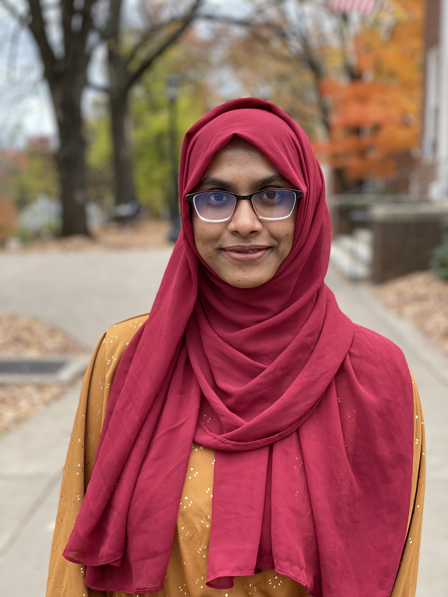

Farzana Yasmin Ahmad
Ph.D. Candidate in Computer Science
Biocomplexity Institute, University of Virginia
About Me
I am a Ph.D. candidate in Computer Science at the Biocomplexity Institute, University of Virginia, advised by Prof. Geoffrey C. Fox. My research is on machine learning for science: building physics-aware generative AI models and reliable ways to evaluate them. My dissertation develops multi-task gradient optimization for physics-aware diffusion surrogates in calorimeter shower simulation, a major computing bottleneck at the Large Hadron Collider.
Expected graduation: Spring 2027
Education
Ph.D. in Computer Science
University of Virginia, Biocomplexity Institute and Department of Computer Science
Advisor: Prof. Geoffrey C. Fox
Dissertation (in progress): Multi-Task Gradient Optimization for Physics-Aware Diffusion Surrogates in Calorimeter Shower Simulation
Master of Computer Science (M.C.S.)
University of Virginia, Department of Computer Science
B.Sc. in Computer Science and Engineering
Bangladesh University of Engineering and Technology (BUET), Dhaka, Bangladesh
Thesis: Distributed Principal Component Analysis for Real-Time Big Data Processing
Research Interests
Applying ML to scientific computing problems
Diffusion, score-based, and flow models that respect physical structure
Trustworthy evaluation of AI for Science models
HPC for large-scale simulation and training
Research Experience
Graduate Research Assistant, Biocomplexity Institute, UVA
2022 – Present
- Designed two physics-aware training losses, based on energy counting statistics and detector geometry, that teach diffusion models physical structure that standard training ignores.
- Designed GradBlend, a conflict-aware gradient blending method that helps the model learn from both the standard loss and the physics-aware losses, even when they conflict. GradBlend outperforms state-of-the-art multi-task training strategies (KDD 2027, AI4Sciences Track).

- Developed a systematic framework for evaluating diffusion, score-based, normalizing-flow, and VAE models that speed up particle collision simulation at the Large Hadron Collider, using physics, computer vision, and statistical metrics.
- Found that even the best models fall short of the standard physics simulator, Geant4 (Bench 2024).
- Proposed the Correlation Frobenius Distance, a new metric that checks whether generated data matches both the fine-grained and overall structure of real detector data (KDD 2027, AI4Sciences Track).
- Generalizing current models to data from a new detector (LEMURS) through added inputs and fine-tuning, so one trained model can serve multiple detector designs (in progress).
Publications
Presentations
Contributed Talks
Posters
Additional Projects

- Led an evaluation of GPT-5, Claude Sonnet 4.5, and Gemini 2.5 Flash on forecasting Ukrainian refugee returns from real conflict and migration data, showing LLMs are not yet reliable for humanitarian planning without human oversight.
- Presented as posters at CAPWIC 2026 and UVERS 2026.
- Building a JAX pipeline that trains hundreds of small neural networks in parallel across random seeds and learning rates in a single training call, using vectorization (vmap) and JIT compilation.
- Using Claude Code for AI-assisted development with project-level coding rules and required unit tests; reviewing all generated code and documenting corrections.
- Designed a pool-based Bayesian optimization loop that finds highly water-soluble molecules while measuring only a small fraction of candidates, using a Gaussian process surrogate on molecular fingerprints.
- Recovered 76% of the 10 most soluble molecules after measuring 14% of a 350-molecule pool, outperforming greedy search (51%) and random search (18%) over 20 runs.
- Showed that using model uncertainty improves discovery: the method found a new top-10 molecule in all 20 runs, while prediction-only search failed in 5.
- Co-developed in 7.5 hours a Claude-powered app that reads a student's CV and statement of purpose and a professor's Google Scholar and lab pages, then scores research fit and advising-style fit with a written explanation.
- Developed the Streamlit front end, connected it to the back end, and maintained the repository.
- Developed a CPU-only retrieval pipeline over calorimeter physics papers using local PDF parsing, embeddings, and FAISS search, with no external APIs, so answers come with page-level citations.
- Built an evaluation harness for repeatable quality checks on a fixed question set.
- Developed a fake news classifier on a sparse mixture-of-experts transformer (Switch Transformer) and compared it with BERT on two datasets (12.8K and 45K samples), reducing training time by up to 50% at comparable accuracy.
Technical Skills
Generative Modeling
Scientific and 3D Data
LLMs and Agents
Statistics and Optimization
HPC and ML Systems
Frameworks and Libraries
Languages and Tools
Honors & Awards
Teaching & Mentoring
Graduate Teaching Assistant, Department of Computer Science, UVA
2022 – 2024- Fall 2024: CS 6501 Economics of Distributed Systems (Prof. Matheus Venturyne Xavier Ferreira). Graduate seminar; sole TA; 10+ students
- Fall 2023: CS 4710 Artificial Intelligence (Prof. Lu Feng). One of 4 TAs; about 100 students
- Spring 2023: CS 3130 Computer Systems and Organization 2 (Prof. Charles Reiss). One of 17 TAs; about 150 students
- Fall 2022: CS 4720 Mobile Application Development (Prof. Mark Sherriff). One of 2 TAs; 50+ students
Held office hours, answered questions on Piazza, supported lab sessions, helped students debug their projects, and graded final projects and quizzes.
Lecturer, Department of Computer Science, United International University, Bangladesh
2019 – 2020Taught four undergraduate courses (Microcontrollers and Microprocessors, Digital System Design, Operating Systems, Introduction to Programming Languages), designing lectures, assignments, and exams.
Mentoring
- As Mentorship Chair of the Computer Science Graduate Student Group (2025), helped form 10 mentor–mentee pairs.
- Mentored an incoming master's student through the transition to UVA.
Service & Leadership
- 2025: Mentorship Chair, Computer Science Graduate Student Group, UVA. Helped form 10 mentor–mentee pairs.
- 2023 – 2024: Vice President, Graduate Society of Women in Engineering, UVA. Organized a fall social event for about 20 attendees.
- 2022 – 2023: President, Association of Bangladeshi Students, UVA. Led the committee in organizing two cultural events with about 170 attendees.
- 2022 – 2023: International Citizen Leader Fellow, UVA
- 2018: Batch Representative, Bangladeshi Women in CSE, BUET
Selected Graduate Coursework
Design and Analysis of Algorithms; Machine Learning for Engineers; Reinforcement Learning; Natural Language Processing; Neural Network Verification; Hardware Accelerators; Formal Methods; Network Security; Human-Computer Interaction; AI for Social Good.